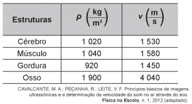

Lista de exemplos 8-69: O som e suas qualidades fisiológicas
OndulatóriaLista 8-69
01.
(IFRS) O som é a propagação de uma onda mecânica longitudinal que se propaga apenas em meios materiais. O som possui qualidades diversas que o ouvido humano normal é capaz de distinguir. Associe corretamente as qualidades fisiológicas do som apresentadas a seguir com as situações apresentadas logo abaixo.
Qualidades fisiológicas
(1) Intensidade
(2) Timbre
(3) Frequência
Situações
( ) Abaixar o volume do rádio ou da televisão.
( ) Distinguir uma voz aguda de mulher de uma voz grave de homem.
( ) Distinguir sons de mesma altura e intensidade produzidos por vozes de pessoas diferentes.
( ) Distinguir a nota Dó emitida por um violino e por uma flauta.
( ) Distinguir as notas musicais emitidas por um violão.
A sequência correta de preenchimento dos parênteses, de cima para baixo, é
a) 1 – 2 – 3 – 3 – 2.
b) 1 – 3 – 2 – 2 – 3.
c) 2 – 3 – 2 – 2 – 1.
d) 3 – 2 – 1 – 1 – 2.
e) 3 – 2 – 2 – 1 – 1.
GABARITO: b)
02.
(UFMG) Uma pessoa toca no piano uma tecla correspondente à nota mi e, em seguida, a que corresponde a sol. Pode-se afirmar que serão ouvidos dois sons diferentes porque as ondas sonoras correspondentes a essas notas têm:
a) amplitudes diferentes.
b) frequências diferentes.
c) intensidades diferentes.
d) timbres diferentes.
e) velocidade de propagação diferentes.
GABARITO: b)
03.
(UFPE) Diante de uma grande parede vertical, um garoto bate palmas e recebe o eco um segundo depois. Se a velocidade do som no ar é 340 m/s, o garoto pode concluir que a parede está situada a uma distância aproximada de:
04.
Para afinar um violão, um músico necessita de uma nota para referência, por exemplo, a nota Lá em um piano. Dessa forma, ele ajusta as cordas do violão até que ambos os instrumentos toquem a mesma nota. Mesmo ouvindo a mesma nota, é possível diferenciar o som emitido pelo piano e pelo violão.
Essa diferenciação é possível, porque
a) a ressonância do som emitido pelo piano é maior.
b) a potência do som emitido pelo piano é maior.
c) a intensidade do som emitido por cada instrumento é diferente.
d) o timbre do som produzido por cada instrumento é diferente.
e) a amplitude do som emitido por cada instrumento é diferente.
GABARITO: d)
05.
(Enem 2018) O princípio básico de produção de imagens em equipamentos de ultrassonografia é a produção de ecos. O princípio pulso-eco refere-se à emissão de um pulso curto de ultrassom que atravessa os tecidos do corpo. No processo de interação entre o som e órgãos ou tecidos, uma das grandezas relevantes é a impedância acústica, relacionada à resistência do meio à passagem do som, definida pelo produto da densidade (ρ) do material pela velocidade (v) do som nesse meio. Quanto maior a diferença de impedância acústica entre duas estruturas, maior será a intensidade de reflexão do pulso e mais facilmente será possível diferenciá-las. A tabela mostra os diferentes valores de densidade e velocidade para alguns órgãos ou tecidos.

Em uma imagem de ultrassom, as estruturas mais facilmente diferenciáveis são
06.
Marque a alternativa correta a respeito da velocidade de propagação das ondas sonoras.
a) O som pode propagar-se apenas em meios gasosos.
b) Em meios líquidos, a velocidade do som é maior do que em meios sólidos.
c) A velocidade de propagação do som no aço é maior do que na água.
d) A velocidade de propagação do som na água é maior do que no aço.
e) O som, assim como as ondas eletromagnéticas, pode ser propagado no vácuo.
GABARITO: c)
07.
(Enem 2014) O sonar é um equipamento eletrônico que permite a localização de objetos e a medida de distâncias no fundo do mar, pela emissão de sinais sônicos e ultrassônicos e a recepção dos respectivos ecos. O fenômeno do eco corresponde à reflexão de uma onda sonora por um objeto, a qual volta ao receptor pouco tempo depois de o som ser emitido. No caso do ser humano, o ouvido é capaz de distinguir sons separados por, no mínimo, 0,1 segundo.
Considerando uma condição em que a velocidade do som no ar é 340 m/s, qual é a distância mínima a que uma pessoa deve estar de um anteparo refletor para que se possa distinguir o eco do som emitido?